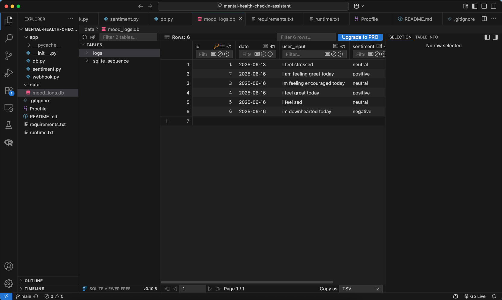

For each project mentioned here, I included a demo and a github link. Feel free to reach out with any questions/comments!
Flask User Verification
This project prompts the user their name and birthday. If a valid birthday is given, then the user recieves a personalized welcome, and is placed in an age group! This age group is determined using an ML model. To reduce redundancy, the training of the model is stored. If the birthday is not valid, then the user is prompted to try again. With a succesfull operation of the interface, the user can replay as many times as they want. From this project I learned how to create a web-app using Flask, how to embed machine learning in the web-app, and how to structure co-dependencies within a project.
- HTML
- Flask (i.e., Python)
- joblib
- sci-kit learn
iPhone Photo selector app
The problem this app addressess is identifying photos for events that occur once a year. Each time the app is run, you can select a date via apple's date picker API. Using this date, the app searches through your photo library to identify all the photos from that day.
The future goal is to identify the photos and then place them into an album to easily organize one's photo library on their iPhone.
- Swift
- Xcode
- iOS Simulator
Mental Health Check-in Conversational Assistant

This project is a sentiment-aware conversational assistant built using Dialogflow and Flask. Specifically, DialogFlow was used for natural language understanding and a Flask-based webhook was used for backend processing. The data associated with each user interaction is stored in a database for later analysis. On request, it summarizes the past week’s mood trends and provides empathetic, context-aware feedback. During development, I used ngrok to securely expose my local Flask server to the internet, enabling real-time interaction and testing with Dialogflow’s cloud-based interface. This project allowed me to gain hands-on experience integrating conversational AI with NLP, managing intent-entity flows, building sentiment-driven logic, and handling backend data storage and analytics.
- DialogFlow
- Flask
- ngrok
- NLTK
- SQLite